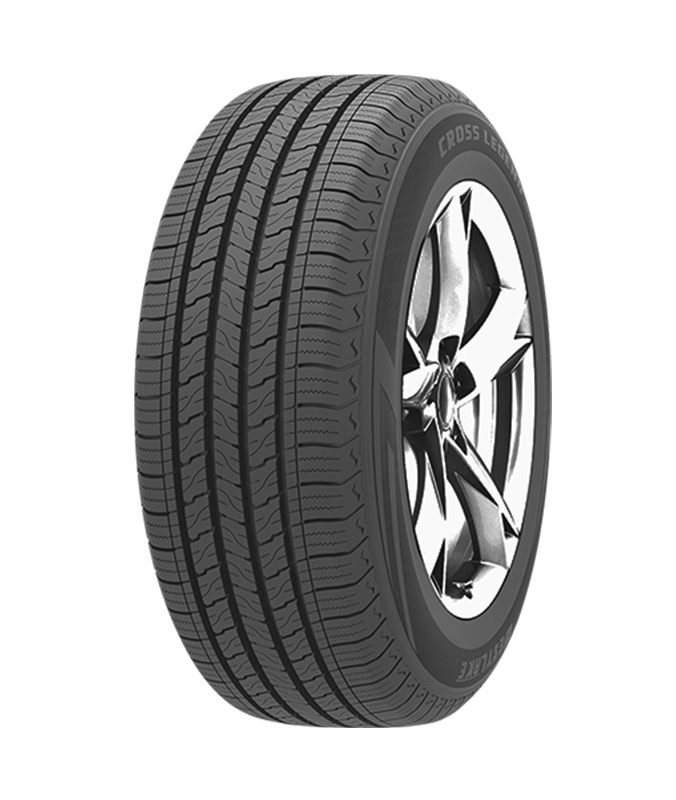

Westlake SU320 225/65R17

RM 275.00
The Westlake SU320 (Cross Legend SU320) in 225/65R17 is a touring/highway-terrain SUV tire designed primarily for daily on-road driving, focusing on ride comfort, low road noise, and value for money. Key Specifications • Tire Size: 225/65R17 (225 mm section width, 65% aspect ratio, 17-inch rim diameter) • Service Description: 102H (102 Load Index / H Speed Rating up to 210 km/h or 130 mph) • Tire Type: Touring / Highway SUV • UTQG Rating: 500AA (Treadwear 500, Traction A, Temperature A) • Treadlife Warranty: Backed by a 50,000-mile manufacturer treadlife warranty in select markets, with local Malaysian sellers typically offering a 3-year manufacturer warranty. Features & Performance • Ride Comfort & Quietness: Built with a touring tread pattern tailored to minimize road noise and deliver a smooth driving experience on paved roads. • All-Weather Daily Grip: Engineered to provide reliable traction and stable handling in both dry and wet conditions, making it suitable for tropical rain and everyday highway commuting. • Vehicle Fitment: Commonly fitted on compact and mid-size SUVs and crossovers (such as the Honda CR-V, Mazda CX-5, Nissan X-Trail, Proton X70, and Toyota RAV4). Note: Westlake and Goodride are sister brands manufactured by Zhongce Rubber Group (ZC Rubber), so you will frequently see this exact model marketed locally as either the Westlake Cross Legend SU320 or the Goodride Cross Legend SU320 with identical tread designs and specs
Klang Hock Li Tyre Services Sdn Bhd, Klang, Selangor, Malaysia.
View live product details and enquire